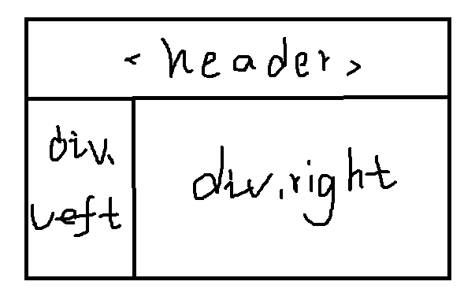
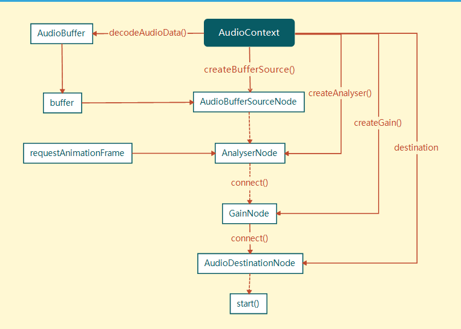

HTML5音乐可视化
在线demo：http://oldblog.smallyu.net/web/passionate/

下面梳理一下HTML5实现音乐可视化的流程。
搭建静态页面
静态页面的结构分三部分，header，left，right。header为语义化标签，left和right都用div来实现。

类似这样，然后把背景颜色改为黑色，字体改成白色，加上或不加边框线，给一定padding或margin，静态页面就搭建好啦。
不过重点不是页面布局。可以在左侧栏有一个曲目列表，点击切歌。这里就不那么麻烦，直接后台加载指定的歌曲。歌曲是许嵩的烟花笑，左侧栏显示部分歌词。
创建音频文件对象
AudioContext对象用于获取音频文件源。
（节点）AudioContext：包含各个AudioNode对象以及它们的联系的对象，可以理解为上下文对象。绝大多数情况下，一个document中只有一个AudioContext。
（方法）createBufferSource()：创建audioBufferSourceNode对象。
可以这样写：
var ac = new window.AudioContext(); // 实例化ac为一个音频对象 var bs = ac.createBufferSource(); // 用bs来保存音频文件资源
有了音频资源，是否就可以播放音频了呢？当然不可以，因为还没有指定文件，告诉对象播放哪一个音频文件。
获取音频数据
创建bufferSource后，到了AudioBufferSourceNode这个节点。这个节点有一个属性值buffer，用来指定文件资源。这个属性值需要一个buffer类型的数据。
（节点）AudioBufferSourceNode：表示内存中的一段音频资源，其音频数据存在于AudioBuffer中（其buffer属性）。
（属性）buffer：AudioBuffer对象，表示要播放的音频资源数据。
获取buffer有两种方式，一种是ajax设置返回值类型为arraybuffer，然后解码，一种是用FileReader读取文件，获得blob值。后一种方式多用input上传文件后获得文件，再进行解析。前面一种好用一点。（留坑）
ajax的原生写法：
var url="...";
var xhr = new XMLHttpRequest();
xhr.abort();
xhr.open("GET", url);
xhr.responseType = "arraybuffer";
xhr.onload = function(){
return xhr.response;
}
xhr.send();onload触发的函数中xhr.response就是我们想要的值。
（方法）decodeAudioData(arrayBuffer, succ(buffer), err) ：异步解码包含在arrayBuffer中的音频数据。
将arraybuffer解码：
ac.decodeAudioData(arraybuffer, function(buffer){ ... },function(err){ ... });
bs.buffer = buffer; // 回调函数中的buffer就是想要的buffer播放音乐
（方法）start：开始播放音频
这个时候调用start方法：
bs.start(0);
打开页面，音乐开始播放。
音量控制
（节点）GainNode：改变音频音量的对象，会改变通过它的音频数据所有的sample frame的信号强度。
（方法）createGain()：创建GainNode对象。
（属性）value：可以改变音频信号的强弱，默认为1，最小值为0。
音乐播放还不行，要添加一个音量控制控件，音量控制用GainNode节点：
var gainNode = accreateGain(); // 创建GainNode对象 gainNode.connect(ac.destination); // 将gainNode连接到AudioDestinationNode节点
这样就有了一个音量控制的对象。
gainNode.gain.value= ... ;
gain.value用于控制输入信号的强弱，也就是音量的大小。HTML中用type为range的input，把值传递给对象，就可以实时控制音量了。
得到音频解析数据
（节点）AnalyserNode：音频分析对象，他能实时的分析音频资源的频域和时域信息，但不会对音频流做任何处理。
（方法）createAnalyser()：创建AnalyserNode对象。
（属性）fftsize：设置FFT（是离散傅里叶变换的快速算法，用于将一个信号变换到频域）值的大小，用于分析得到频域，为32 ~ 2048之间2的整数次倍，默认为2048，实时得到的音频频域的数据个数为fftSize的一半。
（属性）frequencyBinCount，FFT值的一半，即实时得到的音频频域的数据个数
（方法）getByteFrequencyData(Uint8Array)，复制音频当前的频域数据（数量是frequencyBinCount）到Uint8Array（8位无符号整型类型化数组）中。
先创建AnalyserNode对象，然后设置fftsize的值。FFT用于数字信号的处理，会把音频文件流输入的信号变换到频域，用getByteFrequencyData()方法得到经系统处理之后的频域数据。
var analyser = ac.createAnalyser(); // 实例化对象 analyser.fftSize = 32; // 设置fftsize var arr = new Uint8Array(analyser.frequencyBinCount); // getByteFrequencyData()方法要求参数为8位无符号整型类型化数组 analyser.getByteFrequencyData(arr); // arr为所需频域数据
这样得到的数组arr就是用于可视化效果绘制的数据。
（方法）window.requestAnimationFrame()：告诉浏览器您希望执行动画，并请求浏览器调用指定的函数在下一次重绘之前更新动画。该方法将在重绘之前调用的回调作为参数。
一次解析只能得到一组数据，所以需要requestAnimationFrame不断解析，不断得到arr。
前端界面绘制
前端界面使用canvas绘制，实现音乐可视化的效果。
var box = document.getElementById("right"); // 获取right区域的dom
box.appendChild(canvas); // 创建canvas节点
var ctx = canvas.getContext("2d"); // 实例化canvas画笔接下来就是使用for循环和ctx画矩形、圆圈，填充渐变的操作了。（留坑吧，估计不填了）
案例用到web Audio API的关系：

虚线是可以跳过的节点，直接播放音频文件。好吧有错。